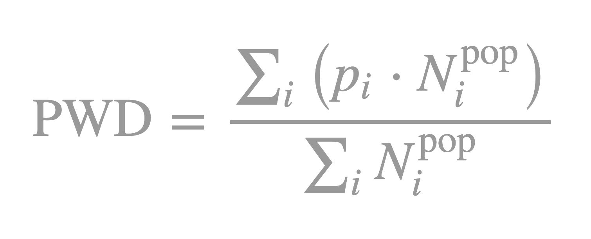

If we want to quantify how densely populated people live in different countries, we generally just use the population density (PD). The PD is a straightforward metric since we divide the total population by the area (for example, the country's area). With the PD, we thus quantify how densely an area is populated if we were to distribute the inhabitants equally across the region.
Such an approach to quantify the population density is sensible if we do not expect significant variation. This is the case if we, for example, assess the density within a particular city or smaller urban regions. But how do we correctly interpret the PD over larger areas, such as a whole country? Take a country such as Russia, for example. With a population of roughly 140 million and an area of 17 million square kilometers, she has a PD of about 8 ppl/km2. Does that mean that on average people live very scattered in Russia, with only eight people per square kilometer?
Well, not necessarily. Generally, when we talk about population density in everyday life, we envision the population density that an average inhabitant of a country experiences . However, this matter of fact is not quantified by the PD1! If, for example, the population of a large country is only living in a few highly populated cities, the average person will experience a high population density. In contrast, the PD for the entire country will be low due to the large total area of the country.
The population weighted density (PWD) is a metric that better describes the population density an average person in a specific country experiences. The metric was already proposed a while ago, in 1984 by statistician John Craig. To compute the metric, we have to subdivide the region we want to analyze into smaller parcels. The PWD2 is then the weighted average of all population densities, where weigh each parcel's population density pi with its respective population Npopi:

Generally, if the population is equally distributed across a country, the PWD is equal to the PD. However, if the population concentrates in a few densely populated cities, then the PWD will increase significantly with respect to the PD.
In the interactive map above, I show the PWD for the different European countries, based on data obtained from WorldPop . Here are some observations I found interesting:
1 I am aware that strictly speaking, I am talking here about the gross population density. We can do better and use the net population density, where we divide the population by the residential land area only (instead of all land area). However, the net population density still might not capture accuratly what population density the average inhabitant experiences.
2 To be more precise, this is known as the population weighted arithmetic mean density.